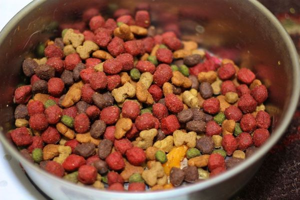

Ataşehir · Örnek Mahallesi
Petilya Pet Shop Ataşehir
Kedi, köpek, kuş ve akvaryum dostlarınız için mama, kum, oyuncak ve bakım ürünleri. Rafları burada gezin, listenizi yapın, stoğu WhatsApp'tan sorun.

Hangi reyona bakıyorsunuz?
Sitede rafları hayvan türüne göre ayırdık. Tabelaya dokunun, o reyondaki ürün gruplarını ve seçerken işe yarayacak notları görün.
Raf arasından kısa bir tur
Her etiket bir ürün grubu. Fiyat yerine seçerken nelere bakacağınızı yazdık; beğendiğinizi listenize ekleyin, stok ve fiyatı mağazaya sorun.
Her reyondan birkaç etiket
- Kedi
Kuru mama
Yavru, yetişkin, kısırlaştırılmış ve yaşlı kediler için farklı formüller.
Neye bakın: Kedinizin yaş dönemi ve varsa veteriner önerisi.
- Kedi
Kedi kumu
Topaklanan bentonit, silika ve bitkisel kökenli kum çeşitleri.
Neye bakın: Kediler kum değişimine hassas olabilir; yeni kumu eskisine karıştırarak geçin.
- Köpek
Göğüs tasması
Çeken ya da boynu hassas köpeklerde yükü göğse dağıtan tasmalar.
Neye bakın: Göğsün en geniş yerini, ön bacakların hemen arkasından ölçün.
- Köpek
Çiğneme ürünleri
Diş kaşıma dönemindeki yavrular ve çiğnemeyi seven köpekler için.
Neye bakın: Köpeğinizin boyutuna uygun olsun; yutulacak kadar küçülen parçayı alın.
- Kuş
Kuş yemi
Muhabbet kuşu, kanarya ve papağanlar için türüne göre karışımlar.
Neye bakın: Yem kabındaki kabuklar dolu sanılabilir; kabı her gün yenileyin.
- Kuş
Kalamar kemiği
Kafese takılan doğal kalsiyum kaynağı; gaga bakımına da yardımcı olur.
Neye bakın: Kafesin tünekten ulaşılan bir yerine, yumuşak yüzü kuşa dönük takın.
- Akvaryum
Su düzenleyici
Şebeke suyundaki klor ve kloramini akvaryuma girmeden nötrlemek için.
Neye bakın: Akvaryum hacminize göre kullanım miktarını etiketten okuyun.
- Akvaryum
Balık yemi
Pul, granül ve tablet yemler; yüzeyde, ortada ya da dipte beslenen türlere göre.
Neye bakın: Az ve sık verin; yenmeyen yem suyu bozar.
Tüm rafları gezinBeş reyon, her birinde mama, bakım ve oyuncak rafları.
Listenizi yazın, WhatsApp'tan sorun
Mağazaya gelmeden önce aklınızdakini toparlayın: mama, kum, tasma ölçüsü, akvaryum için eksikler. Liste hazır olunca tek dokunuşla düzgün bir stok sorusuna dönüşür.
- Dostunuzu seçin: kedi, köpek, kuş, akvaryum ya da hepsi birden.
- Raftan işaretleyin: ihtiyaçları seçin; yaş dönemi, ırk boyutu, adet gibi notları ekleyin.
- Mesajı gönderin: hazır metni WhatsApp'tan iletin; stok ve fiyat bilgisini mağaza size yazsın.

Temsili görselPanoya asılı raf notları
Mağazada sık sorulan konuların genel cevapları. Ayrıntısı, arama aracı ve tarihli mama geçiş planı bakım rehberinde.
Mama değişimi acele sevmez
Yeni mamaya bir haftaya, hassas midelerde on güne yayılan kademeli geçiş, sindirimi zorlamamaya yardımcı olur.
Kum kabı kuralı
Genel öneri: kedi sayısından bir fazla kum kabı, evin sakin ve farklı köşelerinde.
Tasmada iki parmak
Boyun tasması ile boyun arasına iki parmak sığmalı. Yavrular hızlı büyür; ölçüyü sık kontrol edin.
Akvaryuma musluk suyu
Şebeke suyunu eklemeden önce su düzenleyici kullanın. Filtre süngerini musluk altında değil, akvaryumdan aldığınız suyla çalkalayın.
Sofradan uzak tutun
Çikolata, üzüm, soğan, sarımsak ve ksilitollü ürünler kedi ve köpekler için tehlikelidir. Tam liste ve arama aracı
Kuş yeminde kabuk tuzağı
Yem kabı dolu görünse de üstte yalnız boş kabuk kalmış olabilir. Kabukları her gün boşaltıp yemi tazeleyin.
Örnek Mahallesi'ndeki raf arası
Petilya Pet Shop, Ataşehir'de Yunus Emre Caddesi üzerinde. Haftanın her günü açık; hafta sonu da uğrayabilirsiniz.
Raf saatleri
- Pazartesi09:00–21:00
- Salı09:00–21:00
- Çarşamba09:00–21:00
- Perşembe09:00–21:00
- Cuma09:00–21:00
- Cumartesi09:30–21:00
- Pazar10:30–21:00
Pzt–Cum 09:00–21:00
Örnek, Yunus Emre Cd No:28A, 34704 Ataşehir/İstanbul
Kasada en çok sorulanlar
Aradığım ürün stokta mı, nasıl öğrenirim?
WhatsApp'tan ürünün adını ya da paketinin fotoğrafını gönderin; stok ve fiyat bilgisini iletelim. Birden çok ürün soracaksanız liste oluşturucu mesajı sizin için hazırlar.
Eve teslimat var mı?
Teslimat seçeneklerini öğrenmek için bize yazın ya da arayın. Liste oluştururken "Teslimat seçeneklerini öğrenmek istiyorum" seçeneğini işaretlerseniz soru mesajınıza eklenir.
Hangi mamayı seçeceğimi bilmiyorum.
Dostunuzun türü, yaş dönemi, yaklaşık kilosu ve kısırlaştırılıp kısırlaştırılmadığı seçimi kolaylaştırır. Sağlık sorunu ya da özel bir diyet söz konusuysa önce veteriner hekiminize danışın, önerisini bize iletin.
Hafta sonu açık mısınız?
Evet. Cumartesi 09:30–21:00, Pazar 10:30–21:00 arası açığız. Hafta içi saatler 09:00–21:00.
Instagram'da var mısınız?
Evet, @petilya_petshop_ornek hesabından takip edebilirsiniz.
Fotoğrafla sormak daha hızlı
Mama ya da kum soracaksanız paketin ön yüzünü ve içerik bilgisini fotoğraflayın. Tasma için boyun ve göğüs çevresini, akvaryum için yaklaşık hacmi yazın.